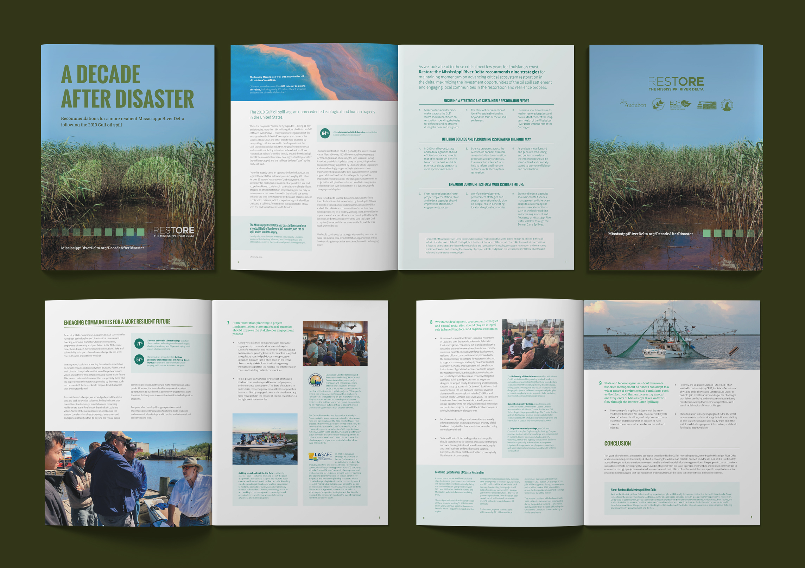

Restore the Mississippi River Delta
Print and digital design for an environmental group focused on coastal restoration.
Restore the Mississippi River Delta (MRD) is a coalition of several regional and national environmental groups dedicated to protecting Louisiana from the continuing threat of coastal land loss.
- Client
- Restore The Mississippi River Delta
- Agency
- Deep Fried Advertising
- Active
- 2016-2021
- Role
- Lead Designer
- Work
-
- Print Design
- Digital Design
- UX Strategy
- Website Design
Their website is an important resource for promoting awareness and educating the public, but had lacked visual appeal and organization. In 2016, I redesigned the site from the ground up by introducing strong typography, bold colors, and a progressive look that flowed throughout the entire site.
A major component of the site — the Priority Restoration Projects interactive map — shows the status of active restoration efforts.
After the website was launched, I continued to work with MRD to design several print materials including a 40-page report, an executive summary handout, and a full page advertisement.
A DECADE AFTER DISASTER
In early 2020, I designed a 12-page report and handout for the 10th anniversary of the BP oil spill. The report reflects on the ecological and economical aftermath of the spill and recommended strategies for continuing coastal restoration projects now and in the future.

SEDIMENT DIVERSION AWARENESS CAMPAIGN
One of MRD’s critical restoration projects is the Mid-Barataria Sediment Diversion. This endeavor would be the largest individual ecosystem restoration project in U.S. history and would be a game-changer for coastal land loss. In early 2021, the Army Corps of Engineers released a Draft Environmental Impact Statement. Its release initiated a public comment period – a crucial time for garnering support. A multimedia campaign was launched to educate the public and encourage further support for the diversion project. I designed several campaign components including social posts, display ads, billboards, and full page print ads.